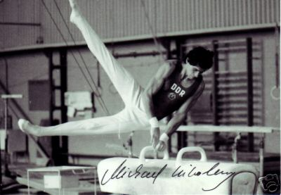

Michael Nikolay (GDR)
1976 and 1980 Olympic PH
Bronze Medalist
1981 World PH Champion

Medal Total
Olympic Games: 1 Silver, 3 Bronze
World Championships: 1 Gold, 1 Bronze
European Championships: 1 Silver
Michael and his twin Jurgen were born in Berlin and trained at SC Dynamo Berlin.
Competition Results
1970 1973 This page was created on June 23,
2005 and was last updated on January 23, 2021.
GDR Youth Championships: 5th AA (Children's Class I)
Jr. Friendship Tournament (Druzhba): 1st Team, 5th AA, 1st PH, 3rd HB
Masters of Tomorrow: 1st AA
1974
Jr. Friendship Tournament (Druzhba): 2nd Team, 2nd PH, 3rd FX, 5th FX
Jr. GDR-HUN Dual Meet: 1st Team, 1st AA
1975
European Championships: 12th AA, 5th PH
GDR-JPN Dual Meet: 2nd Team, 3rd V, 6th PB
1976
Chunichi Cup: 13th AA
GDR Championships: 4th AA
GDR-ITA Dual Meet: 1st Team, 2nd AA, 1st PH, 1st PB, 5th R, 5th V
GDR-SUI Dual Meet: 1st Team, 2nd AA
GDR-USSR Dual Meet: 2nd Team, 6th AA
Olympic Games: 3rd Team, 7th AA, 3rd PH
Olympic Qualificaton Meet: 1st AA, 1st FX, 1st PH, 1st HB
Tokyo Cup: 2nd HB
1977
Berlin-Leipzig-Halle-Potsdam: 1st Team, 1st AA
DTV Cup: 2nd AA, 1st PH, 2nd V, 2nd PB
European Championships: 10th AA, 2nd PH
GDR Championships: 2nd AA
GDR-CSSR Dual Meet: 1st Team, 1st AA
GDR-ROM Dual Meet: 1st Team, 2nd AA
GDR-SUI Dual Meet: 1st Team, 1st AA
GDR-USSR Dual Meet: 2nd Team, 2nd AA
World Cup: 10th AA, 5th FX
1978
FRA-GDR Dual Meet: 1st Team, 3rd AA
GDR Championships: 1st PH
GDR-ROM Dual Meet: 1st Team, 3rd AA, 1st PH
GDR-USSR Dual Meet: 2nd Team, 1st AA
Tournament of Champions: 3rd AA, 2nd HB
World Championships: 3rd Team, 10th AA, 6th PH, 6th HB, 8th PB
World Cup: 15th AA
1979
American Cup: 9th AA (prelims)
Cottbus International: 1st AA, 1st PH, 1st HB
GDR Championships: 2nd AA, 1st PH
GDR-NOR Dual Meet: 1st Team, 1st AA
Hungarian International: 6th AA
Intl. Mixed Pairs: 1st Team
World Championships: 4th Team, 14th AA, 5th HB, 8th PH, 8th PB
1980
GDR Championships: 7th AA, 1st PH
Olympic Games: 2nd Team, 6th AA, 3rd PH, 4th PB
World Cup: 6th AA, 5th HB, 6th R, 6th PB, 7th V
1981
Chunichi Cup: 6th AA
Cottbus International: 1st AA, 1st FX, 1st PH, 1st HB, 2nd PB, 4th R, 4th
V
European Championships: 5th AA, 5th PH, 5th R, 5th HB
GDR Championships: 2nd AA
GDR-FRA-NOR Meet: 1st Team, 1st AA
GDR-USSR Dual Meet: 2nd Team, 1st PH, 1st V, 3rd R, 3rd HB
Paris Grand Prix: 4th AA, 2nd PB, 3rd FX, 5th HB, 6th V, 6th PH
World Championships: 4th Team, 10th AA, 1st PH, 5th V, 5th PB, 6th
FX
1982
American Cup: 9th AA (prelims)
Budapest Invitational: 2nd HB
Cottbus International: 1st AA, 1st PH
GDR Championships: 3rd AA, 1st PH
Intl. Mixed Pairs: 8th Team
World Cup: 13th AA, 8th PH
1983
American Cup: 5th AA
Cottbus International: 2nd AA, 1st PH, 1st HB, 3rd PB
Dynamo Spartakiade: 4th AA
Intl. Mixed Pairs: 10th AA
© Gymn Forum